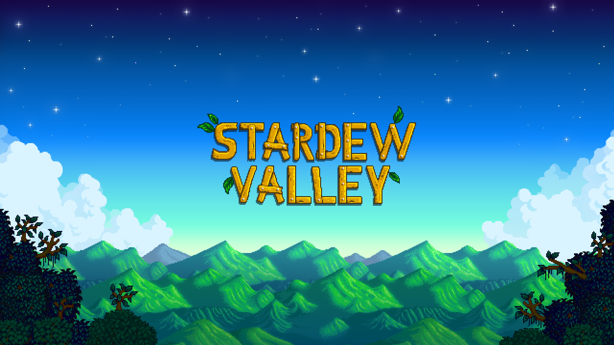
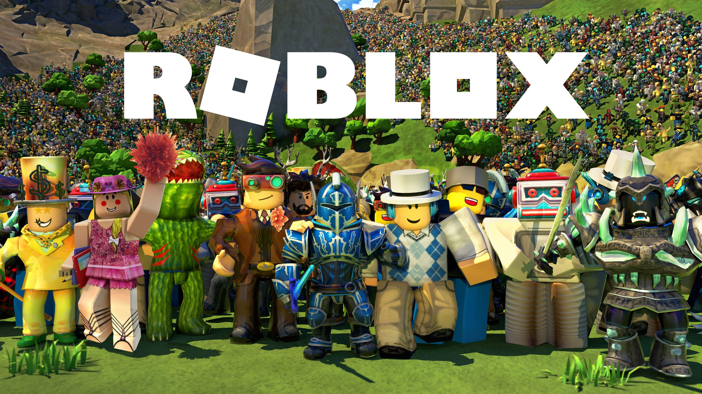

Nazwar
Electrical engineering student and Linux systems craftsman. Exploring low-level kernel performance, dynamic Wayland compositors, bespoke dotfiles, and keyboard-driven workflows.
CachyOS x86-64-v3
High-performance Arch-based distribution with optimized Linux-cachyos kernel, BORE (Burst-Oriented Response Enhancer) CPU scheduler, and x86-64-v3 compiled packages.
Form follows performance.
An electrical engineering student driven by curiosity for computing architectures, low-level tuning, and cohesive aesthetic environments.

"Understanding systems from first principles — removing friction until only pure performance and aesthetic clarity remain."
I am an Electrical Engineering student based in Indonesia. My journey in tech centers around deep curiosity for how hardware and software interlock — from circuit theory and microcontrollers to Linux kernel scheduling, Wayland compositors, and custom shell scripting.
I believe that digital spaces should be both relentless in efficiency and visually inspiring. I construct my environments using lightweight modal editors, GPU-accelerated terminal emulators, and minimalist dotfiles maintained under strict revision control. Outside the terminal, I immerse myself in Nordic atmospheres and cozy worlds.
The Engineered Stack.
A curated ecosystem of operating systems, development environments, and terminal utilities configured for minimal footprint and optimal responsiveness.
Operating Systems & Kernel Tuning
CachyOS / Arch Linux
Daily workstation featuring x86-64-v3 compiler optimizations, custom sysctl kernel tunings, and Btrfs snapshots.
Hyprland & Wayland
Dynamic tiling window manager running smoothly on Wayland with custom animations, gestures, and Waybar status bar.
System Administration
systemd service unit management, automated maintenance timers, zram compression, and udev hardware rules.
Modular Dotfiles
Version-controlled configuration trees managed cleanly with Git, symlinked paths, and automatic deployment scripts.
Development & Codecraft
Neovim (Lua)
Lightning-fast modal editing environment configured with Lazy.nvim, Treesitter AST syntax highlighting, and native LSP.
Git & GitHub
Distributed version control, atomic commits, signed commits, branch rebasing, and repository management.
Fish & Zsh Shells
Fast, interactive command lines with intelligent autosuggestions, Starship prompt, and custom system alias functions.
Rust, C & Scripting
Exploring systems programming, memory safety concepts, embedded hardware routines, and automation scripts.
Terminal & High-Frequency CLI Tools
Foot & Kitty
Lightweight, GPU-accelerated terminal emulators for Wayland with pixel-perfect font rendering and zero input lag.
Fzf & Ripgrep
Fuzzy finder integrated across terminal history, file navigation, and project-wide text search at instant speeds.
Tmux
Terminal workspace multiplexer with persistent sessions, split panes, and seamless keybindings aligned with Neovim.
Btop & Fastfetch
Real-time resource inspection, CPU core monitoring, thermals, process tree tracking, and custom system banners.
Direct Command Interface.
An authentic simulation of my CachyOS terminal environment. Run commands or tap chips to query system states, tools, and identity.
Worlds I Return To.
Beyond systems and code, a curated showcase of atmospheric game universes celebrated for immersion, deep mechanics, and aesthetic beauty.
The Elder Scrolls V: Skyrim SE
An enduring masterwork in cold mountain exploration, rich lore, and endless modding craftsmanship. Tailored with a custom plugin load order emphasizing visual realism, atmospheric lighting, and enhanced survival mechanics.

SIMULATIONStardew Valley
Relaxing pixel-art countryside life with deep progression mechanics, serene soundtrack, and timeless charm.

SANDBOXRoblox
Creative sandbox platform exploring user-generated experiences, custom game mechanics, and Lua scripting experiments.
Direct Frequencies.
Connect across channels for technical discussions, dotfiles collaboration, or gaming sessions.